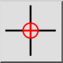

Ierobežot ortogonāli
Rīkjosla / ikona:


Izvēlne: Snap > Ierobežot ortogonāli
Īsais ceļvedis: E, O
Komandas: restrictorthogonal | eo
Rīkjosla / ikona:


Ierobežo kursoru vertikāli vai horizontāli līdz tai pašai X vai Y pozīcijai kā relatīvais nulles punkts.